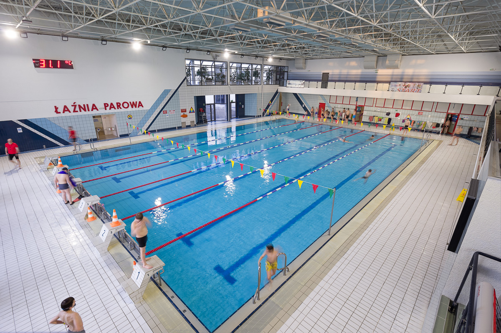
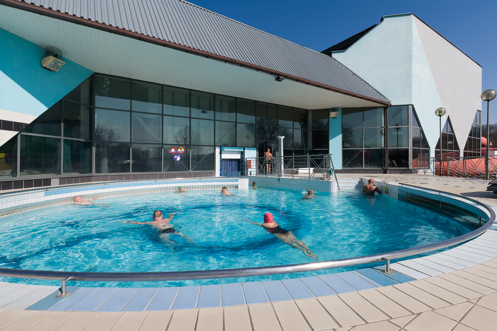
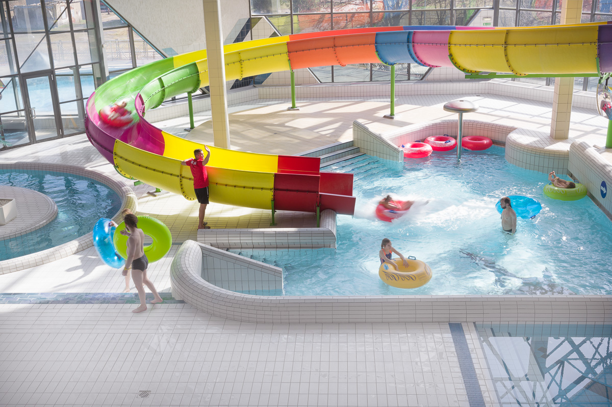

Basen sportowy o wymiarach 25m x 16,5m i głębokości od 1,8m do 2,2m.
Basen podzielony jest na 6 torów. Temperatura wody 27-28,0 °C.
Basen Sportowy
Basen sportowy o wymiarach 25m x 16,5m i głębokości od 1,8m do 2,2m.
Basen podzielony jest na 6 torów. Temperatura wody 27-28,0 °C.
Basen z Falą Morską
Basen z falą morską to obiekt o głębokości od 0,0 do 1,4 m wyposażony
w urządzenia do wytwarzania sztucznej fali. Temperatura wody 30-31 °C.

Basen solankowy czyli basen ze słoną wodą to całoroczny obiekt otwarty o średnicy 10 m i głębokości zmiennej od 1,1m do 1,3 m. Temperatura wody 32-34 °C.
basen solankowy
Basen solankowy czyli basen ze słoną wodą to całoroczny obiekt otwarty o średnicy 10 m i głębokości zmiennej od 1,1m do 1,3 m. Temperatura wody 32-34 °C.
wanny jacuzzi
Trzy ośmioosobowe wanny jacuzzi z masażem wodno-powietrznym. Temperatura wody 32-33 °C.

Zjeżdżalnia pontonowa o długości 50m.
zjeżdżalnia
Zjeżdżalnia pontonowa o długości 50m.